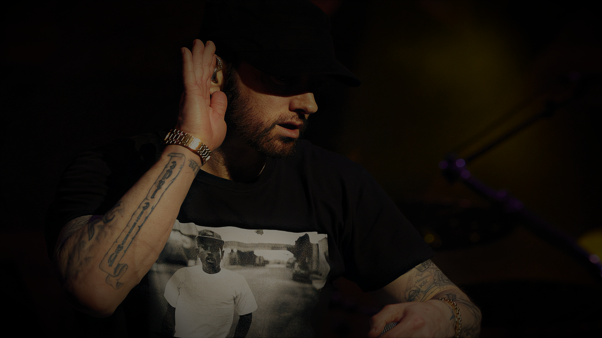

Drake, born Aubrey Drake Graham on October 24, 1986, is a Canadian rapper, singer, songwriter, actor, and entrepreneur. Emerging from the Toronto underground music scene, he first gained recognition for his role as Jimmy Brooks on the television series "Degrassi: The Next Generation."
Transitioning to music, Drake quickly rose to prominence with his mixtapes, gaining attention for his introspective lyrics, catchy hooks, and versatile flow. His debut studio album, "Thank Me Later" (2010), debuted at number one on the Billboard 200 chart, establishing him as a major force in hip-hop and R&B.
TYSON
RAPPERS
TRAVIS SCOTT
ABOUT THE ARTIST
Travis Scott, born Jacques Berman Webster II on April 30, 1992, is an American rapper, singer, songwriter, and record producer. Hailing from Houston, Texas, Scott initially gained recognition for his distinctive production style, characterized by atmospheric sounds and heavy bass.
His breakthrough came with the release of his mixtape "Days Before Rodeo" in 2014, followed by his debut studio album, "Rodeo," in 2015. The album's fusion of hip-hop, trap, and psychedelic elements garnered critical acclaim and established Scott as a rising star in the rap scene.
TYSON
RAPPERS
FUTURE
ABOUT THE ARTIST
Future, born Nayvadius DeMun Wilburn on November 20, 1983, is an American rapper, singer, and songwriter known for his unique voice, melodic flow, and influence on modern hip-hop. Emerging from Atlanta's vibrant music scene, Future gained prominence with his mixtapes in the early 2010s, leading to mainstream success with hits like "Turn On the Lights," "Mask Off," and "March Madness." He is recognized for pioneering the "trap" music sound, blending autotune with gritty, introspective lyrics that often explore themes of success, excess, and personal struggles. Future's prolific output and impact on the genre have solidified his place as one of the most influential artists in contemporary rap music.

TYSON
RAPPERS
EMMINUM
ABOUT THE ARTIST
Eminem, born Marshall Bruce Mathers III on October 17, 1972, is an American rapper, songwriter, and record producer. Widely regarded as one of the greatest rappers of all time, Eminem rose to prominence in the late 1990s with his provocative lyrics, rapid-fire delivery, and controversial persona.
His major-label debut album, "The Slim Shady LP" (1999), introduced the world to his alter ego, Slim Shady, and earned him his first Grammy Award for Best Rap Album. Eminem's subsequent albums, including "The Marshall Mathers LP" (2000) and "The Eminem Show" (2002), solidified his status as a cultural icon and propelled him to international superstardomonsectetur adipisicing elit.